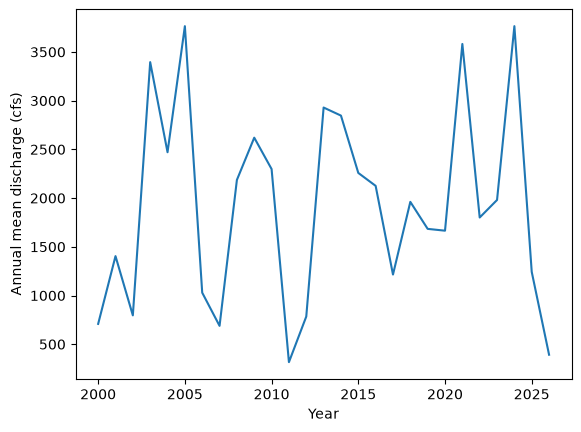

USGS dataretrieval Python Package Statistics Examples
This notebook provides examples of using the Python dataretrieval package to retrieve summary statistics for observed variables at a United States Geological Survey (USGS) monitoring location using the USGS Water Data API via the waterdata module. The waterdata module is the recommended way to access USGS water data and replaces the deprecated nwis module.
Two statistics functions are demonstrated:
get_stats_date_range()— monthly, calendar-year, and water-year summaries (the “observationIntervals” service).get_stats_por()— day-of-year and month-of-year summaries over the full period of record (the “observationNormals” service).
Install the Package
Use the following code to install the package if it doesn’t exist already within your Jupyter Python environment.
[1]:
!pip install dataretrieval
Requirement already satisfied: dataretrieval in /opt/hostedtoolcache/Python/3.13.13/x64/lib/python3.13/site-packages (0.1.dev1+gdca49a7bc)
Requirement already satisfied: httpx in /opt/hostedtoolcache/Python/3.13.13/x64/lib/python3.13/site-packages (from dataretrieval) (0.28.1)
Requirement already satisfied: pandas<4.0.0,>=2.0.0 in /opt/hostedtoolcache/Python/3.13.13/x64/lib/python3.13/site-packages (from dataretrieval) (3.0.3)
Requirement already satisfied: numpy>=1.26.0 in /opt/hostedtoolcache/Python/3.13.13/x64/lib/python3.13/site-packages (from pandas<4.0.0,>=2.0.0->dataretrieval) (2.4.6)
Requirement already satisfied: python-dateutil>=2.8.2 in /opt/hostedtoolcache/Python/3.13.13/x64/lib/python3.13/site-packages (from pandas<4.0.0,>=2.0.0->dataretrieval) (2.9.0.post0)
Requirement already satisfied: six>=1.5 in /opt/hostedtoolcache/Python/3.13.13/x64/lib/python3.13/site-packages (from python-dateutil>=2.8.2->pandas<4.0.0,>=2.0.0->dataretrieval) (1.17.0)
Requirement already satisfied: anyio in /opt/hostedtoolcache/Python/3.13.13/x64/lib/python3.13/site-packages (from httpx->dataretrieval) (4.13.0)
Requirement already satisfied: certifi in /opt/hostedtoolcache/Python/3.13.13/x64/lib/python3.13/site-packages (from httpx->dataretrieval) (2026.5.20)
Requirement already satisfied: httpcore==1.* in /opt/hostedtoolcache/Python/3.13.13/x64/lib/python3.13/site-packages (from httpx->dataretrieval) (1.0.9)
Requirement already satisfied: idna in /opt/hostedtoolcache/Python/3.13.13/x64/lib/python3.13/site-packages (from httpx->dataretrieval) (3.17)
Requirement already satisfied: h11>=0.16 in /opt/hostedtoolcache/Python/3.13.13/x64/lib/python3.13/site-packages (from httpcore==1.*->httpx->dataretrieval) (0.16.0)
Load the package so you can use it along with other packages used in this notebook.
[2]:
from IPython.display import display
from matplotlib import ticker
from dataretrieval import waterdata
Basic Usage
This example uses get_stats_date_range() to retrieve monthly and annual statistics for an observed variable at a USGS monitoring location. Commonly used arguments include:
monitoring_location_id (string or list of strings): USGS monitoring location id(s), formed as the agency code and site number joined by a hyphen (e.g.
"USGS-02319394").parameter_code (string or list of strings): 5-digit USGS parameter code(s), e.g.
"00060"(discharge).computation_type (string or list of strings): the statistic(s) to compute — one or more of
arithmetic_mean,maximum,median,minimum,percentile.start_date / end_date (string): optionally bound the period summarized, in
YYYY-MM-DDformat.
Example 1: Get monthly and annual mean discharge for a single monitoring location
[3]:
# Set the parameters needed to retrieve data
site = "USGS-02319394"
parameter_code = "00060" # Discharge
# Retrieve the statistics (monthly, calendar-year, and water-year means)
x1 = waterdata.get_stats_date_range(
monitoring_location_id=site,
parameter_code=parameter_code,
computation_type="arithmetic_mean",
)
print("Retrieved " + str(len(x1[0])) + " statistic values.")
Retrieving: observationIntervals · 1 page · 344 rows
No API key detected — register for higher rate limits at https://api.waterdata.usgs.gov/signup/
Retrieved 344 statistic values.
Interpreting the Result
Each waterdata function returns a tuple of a pandas data frame and a metadata object. The data frame holds the computed statistics; each row is one interval, identified by the interval_type column (month, calendar_year, or water_year), with the computed statistic in the value column.
Once you’ve got the data frame, there are several useful things you can do to explore the data.
[4]:
# Display the data frame as a table
display(x1[0])
| geometry | monitoring_location_id | monitoring_location_name | site_type | site_type_code | country_code | state_code | county_code | start_date | end_date | interval_type | value | percentile | sample_count | approval_status | computation_id | computation | parameter_code | unit_of_measure | parent_time_series_id | |
|---|---|---|---|---|---|---|---|---|---|---|---|---|---|---|---|---|---|---|---|---|
| 0 | POINT (-83.18014 30.41049) | USGS-02319394 | WITHLACOOCHEE RIVER NR LEE, FLA | Stream | ST | US | 12 | 079 | 2000-11-01 | 2000-11-30 | month | 600.967 | NaN | 30 | approved | 30eb30d0-c252-4601-a702-1e053e387200 | arithmetic_mean | 00060 | ft^3/s | dabac917c8ea4f66a163ddc9d3bb4840 |
| 1 | POINT (-83.18014 30.41049) | USGS-02319394 | WITHLACOOCHEE RIVER NR LEE, FLA | Stream | ST | US | 12 | 079 | 2000-12-01 | 2000-12-31 | month | 812.903 | NaN | 31 | approved | 0bfbd34c-53ed-429b-bea1-facc88c3c639 | arithmetic_mean | 00060 | ft^3/s | dabac917c8ea4f66a163ddc9d3bb4840 |
| 2 | POINT (-83.18014 30.41049) | USGS-02319394 | WITHLACOOCHEE RIVER NR LEE, FLA | Stream | ST | US | 12 | 079 | 2001-01-01 | 2001-01-31 | month | 1668.387 | NaN | 31 | approved | 533f6064-f298-4eb1-b74f-da0c09d8c525 | arithmetic_mean | 00060 | ft^3/s | dabac917c8ea4f66a163ddc9d3bb4840 |
| 3 | POINT (-83.18014 30.41049) | USGS-02319394 | WITHLACOOCHEE RIVER NR LEE, FLA | Stream | ST | US | 12 | 079 | 2001-02-01 | 2001-02-28 | month | 1234.286 | NaN | 28 | approved | 67ee8c57-e9d0-42a9-826f-a86dbac7a377 | arithmetic_mean | 00060 | ft^3/s | dabac917c8ea4f66a163ddc9d3bb4840 |
| 4 | POINT (-83.18014 30.41049) | USGS-02319394 | WITHLACOOCHEE RIVER NR LEE, FLA | Stream | ST | US | 12 | 079 | 2001-03-01 | 2001-03-31 | month | 3782.581 | NaN | 31 | approved | 7d13bc10-dacc-48c5-bf41-63c13569f47c | arithmetic_mean | 00060 | ft^3/s | dabac917c8ea4f66a163ddc9d3bb4840 |
| ... | ... | ... | ... | ... | ... | ... | ... | ... | ... | ... | ... | ... | ... | ... | ... | ... | ... | ... | ... | ... |
| 339 | POINT (-83.18014 30.41049) | USGS-02319394 | WITHLACOOCHEE RIVER NR LEE, FLA | Stream | ST | US | 12 | 079 | 2021-10-01 | 2022-09-30 | water_year | 2034.863 | NaN | 365 | approved | a579a7a4-b5bc-45ce-a754-9d784d05dffe | arithmetic_mean | 00060 | ft^3/s | dabac917c8ea4f66a163ddc9d3bb4840 |
| 340 | POINT (-83.18014 30.41049) | USGS-02319394 | WITHLACOOCHEE RIVER NR LEE, FLA | Stream | ST | US | 12 | 079 | 2022-10-01 | 2023-09-30 | water_year | 1731.784 | NaN | 365 | approved | ef755db3-4cb0-44ec-9192-1a2f85708608 | arithmetic_mean | 00060 | ft^3/s | dabac917c8ea4f66a163ddc9d3bb4840 |
| 341 | POINT (-83.18014 30.41049) | USGS-02319394 | WITHLACOOCHEE RIVER NR LEE, FLA | Stream | ST | US | 12 | 079 | 2023-10-01 | 2024-09-30 | water_year | 3392.778 | NaN | 365 | approved | f73ed1da-35e0-4167-9387-cab6aad5961c | arithmetic_mean | 00060 | ft^3/s | dabac917c8ea4f66a163ddc9d3bb4840 |
| 342 | POINT (-83.18014 30.41049) | USGS-02319394 | WITHLACOOCHEE RIVER NR LEE, FLA | Stream | ST | US | 12 | 079 | 2024-10-01 | 2025-09-30 | water_year | 1938.863 | NaN | 365 | approved | 5004f92c-d1f8-4c1c-9a41-ce1e73d15888 | arithmetic_mean | 00060 | ft^3/s | dabac917c8ea4f66a163ddc9d3bb4840 |
| 343 | POINT (-83.18014 30.41049) | USGS-02319394 | WITHLACOOCHEE RIVER NR LEE, FLA | Stream | ST | US | 12 | 079 | 2025-10-01 | 2026-02-08 | water_year | 394.382 | NaN | 131 | approved | 3f636529-a609-4e82-86b0-6c0e03c0072d | arithmetic_mean | 00060 | ft^3/s | dabac917c8ea4f66a163ddc9d3bb4840 |
344 rows × 20 columns
Show the data types of the columns in the resulting data frame.
[5]:
print(x1[0].dtypes)
geometry geometry
monitoring_location_id str
monitoring_location_name str
site_type str
site_type_code str
country_code str
state_code str
county_code str
start_date str
end_date str
interval_type str
value str
percentile float64
sample_count int64
approval_status str
computation_id str
computation str
parameter_code str
unit_of_measure str
parent_time_series_id str
dtype: object
Make a quick time series plot of the annual (calendar-year) mean values.
[6]:
# select the annual (calendar-year) means into a plain DataFrame for plotting.
# The statistics services return a GeoDataFrame carrying a site-point geometry,
# and report numeric values as strings, so we coerce ``value`` to float.
annual = x1[0].loc[
x1[0]["interval_type"] == "calendar_year", ["start_date", "value"]
].copy()
annual["year"] = annual["start_date"].str[:4].astype(int)
annual["value"] = annual["value"].astype(float)
annual = annual.sort_values("year")
ax = annual.plot(x="year", y="value", legend=False)
ax.xaxis.set_major_formatter(ticker.FormatStrFormatter("%d"))
ax.set_xlabel("Year")
ax.set_ylabel("Annual mean discharge (cfs)")
[6]:
Text(0, 0.5, 'Annual mean discharge (cfs)')

The other part of the result is a metadata object describing the query that was executed. For example, you can access the URL that was assembled to retrieve the requested data from the USGS Water Data API.
[7]:
print("The query URL used to retrieve the data was: " + x1[1].url)
The query URL used to retrieve the data was: https://api.waterdata.usgs.gov/statistics/v0/observationIntervals?computation_type=arithmetic_mean&monitoring_location_id=USGS-02319394&page_size=1000¶meter_code=00060
Additional Examples
Example 2: Get monthly and annual mean statistics for two monitoring locations
Multiple monitoring locations and parameter codes can be requested at once; only the data that are available are returned.
[8]:
x2 = waterdata.get_stats_date_range(
monitoring_location_id=["USGS-02319394", "USGS-02171500"],
parameter_code=["00010", "00060"],
computation_type="arithmetic_mean",
)
display(x2[0])
Retrieving: observationIntervals · 1 page · 2,114 rows
| geometry | monitoring_location_id | monitoring_location_name | site_type | site_type_code | country_code | state_code | county_code | start_date | end_date | interval_type | value | percentile | sample_count | approval_status | computation_id | computation | parameter_code | unit_of_measure | parent_time_series_id | |
|---|---|---|---|---|---|---|---|---|---|---|---|---|---|---|---|---|---|---|---|---|
| 0 | POINT (-80.14136 33.45378) | USGS-02171500 | SANTEE RIVER NEAR PINEVILLE, SC | Stream | ST | US | 45 | 015 | 1942-05-01 | 1942-05-31 | month | 584.032 | NaN | 31 | approved | 043dcd51-8a2f-48ca-bb20-20933651f633 | arithmetic_mean | 00060 | ft^3/s | 218ab832dc5a4c4b9fb1d51efa232d15 |
| 1 | POINT (-80.14136 33.45378) | USGS-02171500 | SANTEE RIVER NEAR PINEVILLE, SC | Stream | ST | US | 45 | 015 | 1942-06-01 | 1942-06-30 | month | 2571.333 | NaN | 30 | approved | 0a96c646-ca99-45de-b8ea-b85954d5e029 | arithmetic_mean | 00060 | ft^3/s | 218ab832dc5a4c4b9fb1d51efa232d15 |
| 2 | POINT (-80.14136 33.45378) | USGS-02171500 | SANTEE RIVER NEAR PINEVILLE, SC | Stream | ST | US | 45 | 015 | 1942-07-01 | 1942-07-31 | month | 400.742 | NaN | 31 | approved | 88991dcf-0994-4d18-be50-378146f193fe | arithmetic_mean | 00060 | ft^3/s | 218ab832dc5a4c4b9fb1d51efa232d15 |
| 3 | POINT (-80.14136 33.45378) | USGS-02171500 | SANTEE RIVER NEAR PINEVILLE, SC | Stream | ST | US | 45 | 015 | 1942-08-01 | 1942-08-31 | month | 549.581 | NaN | 31 | approved | 64fd8688-07e2-4710-8cd4-57ee0e25ff66 | arithmetic_mean | 00060 | ft^3/s | 218ab832dc5a4c4b9fb1d51efa232d15 |
| 4 | POINT (-80.14136 33.45378) | USGS-02171500 | SANTEE RIVER NEAR PINEVILLE, SC | Stream | ST | US | 45 | 015 | 1942-09-01 | 1942-09-30 | month | 1338.467 | NaN | 30 | approved | c8b93535-460a-4dfd-91ab-a5ec4a16c827 | arithmetic_mean | 00060 | ft^3/s | 218ab832dc5a4c4b9fb1d51efa232d15 |
| ... | ... | ... | ... | ... | ... | ... | ... | ... | ... | ... | ... | ... | ... | ... | ... | ... | ... | ... | ... | ... |
| 2109 | POINT (-83.18014 30.41049) | USGS-02319394 | WITHLACOOCHEE RIVER NR LEE, FLA | Stream | ST | US | 12 | 079 | 2021-10-01 | 2022-09-30 | water_year | 20.784 | NaN | 351 | approved | 6bdfe85c-4494-4143-84ce-e30849f1e68b | arithmetic_mean | 00010 | degC | ea8d8089780f48428cff4a5ba344f1aa |
| 2110 | POINT (-83.18014 30.41049) | USGS-02319394 | WITHLACOOCHEE RIVER NR LEE, FLA | Stream | ST | US | 12 | 079 | 2022-10-01 | 2023-09-30 | water_year | 21.121 | NaN | 361 | approved | c4ec6635-83cf-4d54-9fd8-caed23b96a98 | arithmetic_mean | 00010 | degC | ea8d8089780f48428cff4a5ba344f1aa |
| 2111 | POINT (-83.18014 30.41049) | USGS-02319394 | WITHLACOOCHEE RIVER NR LEE, FLA | Stream | ST | US | 12 | 079 | 2023-10-01 | 2024-09-30 | water_year | 20.383 | NaN | 342 | approved | e533a96f-655a-4753-b960-0560b0be2d97 | arithmetic_mean | 00010 | degC | ea8d8089780f48428cff4a5ba344f1aa |
| 2112 | POINT (-83.18014 30.41049) | USGS-02319394 | WITHLACOOCHEE RIVER NR LEE, FLA | Stream | ST | US | 12 | 079 | 2024-10-01 | 2025-09-30 | water_year | 20.928 | NaN | 348 | approved | 197d9815-4ecd-4b89-a01e-50e128e4dbd6 | arithmetic_mean | 00010 | degC | ea8d8089780f48428cff4a5ba344f1aa |
| 2113 | POINT (-83.18014 30.41049) | USGS-02319394 | WITHLACOOCHEE RIVER NR LEE, FLA | Stream | ST | US | 12 | 079 | 2025-10-01 | 2025-12-06 | water_year | 20.439 | NaN | 62 | approved | 6b6ce4c2-4ca8-4f73-86df-f3583f914dc0 | arithmetic_mean | 00010 | degC | ea8d8089780f48428cff4a5ba344f1aa |
2114 rows × 20 columns
Example 3: Day-of-year mean and median statistics over the period of record
get_stats_por() summarizes the full period of record by day of year (and month of year). Here we request both the mean and median daily statistics for discharge at a monitoring location.
[9]:
x3 = waterdata.get_stats_por(
monitoring_location_id="USGS-02171500",
parameter_code="00060",
computation_type=["arithmetic_mean", "median"],
)
display(x3[0])
Retrieving: observationNormals · 1 page · 756 rows
| geometry | monitoring_location_id | monitoring_location_name | site_type | site_type_code | country_code | state_code | county_code | time_of_year | time_of_year_type | value | percentile | sample_count | approval_status | computation_id | computation | parameter_code | unit_of_measure | parent_time_series_id | |
|---|---|---|---|---|---|---|---|---|---|---|---|---|---|---|---|---|---|---|---|
| 0 | POINT (-80.14136 33.45378) | USGS-02171500 | SANTEE RIVER NEAR PINEVILLE, SC | Stream | ST | US | 45 | 015 | 01-01 | day_of_year | 2046.695 | NaN | 82 | approved | e7827589-ff6e-472d-9864-1bfe558b9639 | arithmetic_mean | 00060 | ft^3/s | 218ab832dc5a4c4b9fb1d51efa232d15 |
| 1 | POINT (-80.14136 33.45378) | USGS-02171500 | SANTEE RIVER NEAR PINEVILLE, SC | Stream | ST | US | 45 | 015 | 01-02 | day_of_year | 2041.866 | NaN | 82 | approved | 9e8feb48-3652-4bca-82dc-c2f2a65650e5 | arithmetic_mean | 00060 | ft^3/s | 218ab832dc5a4c4b9fb1d51efa232d15 |
| 2 | POINT (-80.14136 33.45378) | USGS-02171500 | SANTEE RIVER NEAR PINEVILLE, SC | Stream | ST | US | 45 | 015 | 01-03 | day_of_year | 2080.963 | NaN | 82 | approved | 35c0af68-80d2-4635-865c-bb224bfb5e9a | arithmetic_mean | 00060 | ft^3/s | 218ab832dc5a4c4b9fb1d51efa232d15 |
| 3 | POINT (-80.14136 33.45378) | USGS-02171500 | SANTEE RIVER NEAR PINEVILLE, SC | Stream | ST | US | 45 | 015 | 01-04 | day_of_year | 2434.256 | NaN | 82 | approved | eacd3baa-e0ab-4c08-8334-bb3ed3b916c8 | arithmetic_mean | 00060 | ft^3/s | 218ab832dc5a4c4b9fb1d51efa232d15 |
| 4 | POINT (-80.14136 33.45378) | USGS-02171500 | SANTEE RIVER NEAR PINEVILLE, SC | Stream | ST | US | 45 | 015 | 01-05 | day_of_year | 2597.819 | NaN | 83 | approved | 19f28744-96cb-4cfa-9d28-5f114b82fcc6 | arithmetic_mean | 00060 | ft^3/s | 218ab832dc5a4c4b9fb1d51efa232d15 |
| ... | ... | ... | ... | ... | ... | ... | ... | ... | ... | ... | ... | ... | ... | ... | ... | ... | ... | ... | ... |
| 751 | POINT (-80.14136 33.45378) | USGS-02171500 | SANTEE RIVER NEAR PINEVILLE, SC | Stream | ST | US | 45 | 015 | 08 | month_of_year | 563.0 | 50.0 | 84 | approved | b3fc0cec-1732-4bac-b153-a18bef567453 | median | 00060 | ft^3/s | 218ab832dc5a4c4b9fb1d51efa232d15 |
| 752 | POINT (-80.14136 33.45378) | USGS-02171500 | SANTEE RIVER NEAR PINEVILLE, SC | Stream | ST | US | 45 | 015 | 09 | month_of_year | 563.0 | 50.0 | 84 | approved | 8cd55012-5b16-42f7-8cb3-b234aa15f859 | median | 00060 | ft^3/s | 218ab832dc5a4c4b9fb1d51efa232d15 |
| 753 | POINT (-80.14136 33.45378) | USGS-02171500 | SANTEE RIVER NEAR PINEVILLE, SC | Stream | ST | US | 45 | 015 | 10 | month_of_year | 563.0 | 50.0 | 84 | approved | a1b160db-bc3f-44e7-a150-881474373276 | median | 00060 | ft^3/s | 218ab832dc5a4c4b9fb1d51efa232d15 |
| 754 | POINT (-80.14136 33.45378) | USGS-02171500 | SANTEE RIVER NEAR PINEVILLE, SC | Stream | ST | US | 45 | 015 | 11 | month_of_year | 561.5 | 50.0 | 84 | approved | 48757820-8d5e-4407-bced-bca2717c6c97 | median | 00060 | ft^3/s | 218ab832dc5a4c4b9fb1d51efa232d15 |
| 755 | POINT (-80.14136 33.45378) | USGS-02171500 | SANTEE RIVER NEAR PINEVILLE, SC | Stream | ST | US | 45 | 015 | 12 | month_of_year | 553.5 | 50.0 | 84 | approved | 9373bc06-0df5-4a86-9590-dfadcdcb6efb | median | 00060 | ft^3/s | 218ab832dc5a4c4b9fb1d51efa232d15 |
756 rows × 19 columns